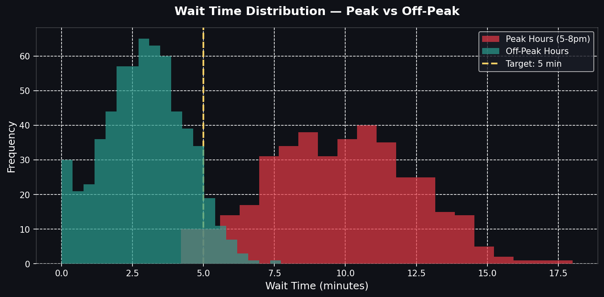
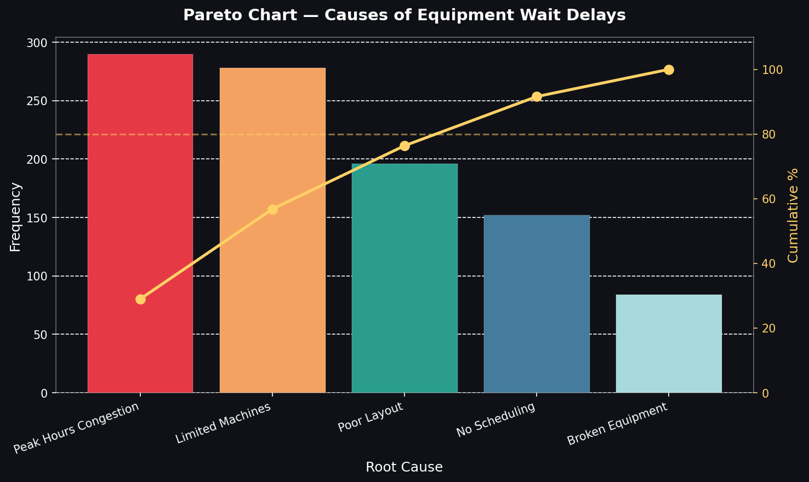
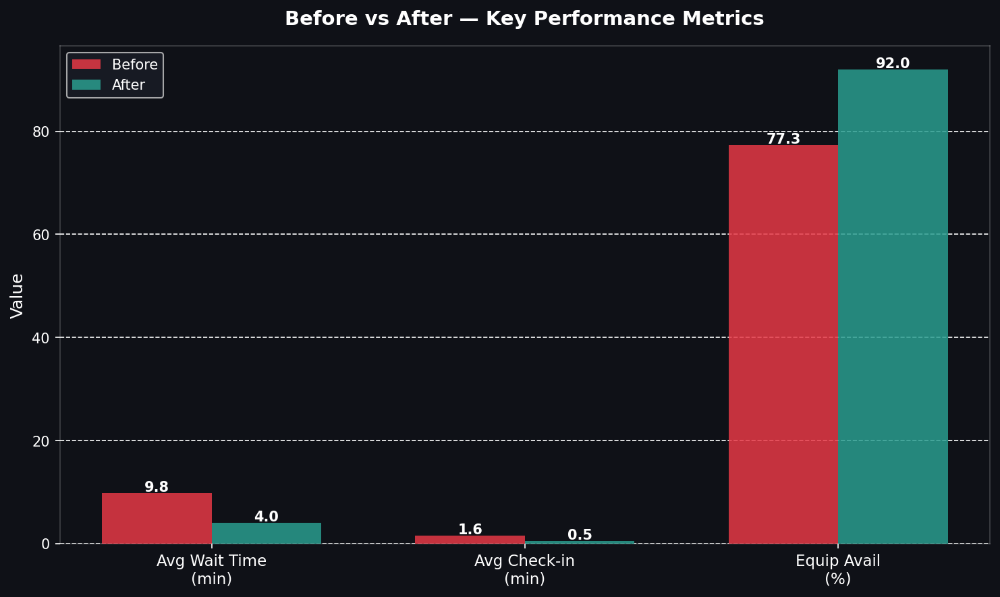

A full DMAIC project applying Lean Six Sigma to reduce equipment wait times, improve throughput, and deliver measurable member satisfaction gains at a fitness facility.
View full report ↓This project examines how gym arrivals, check-in flow, and equipment availability interact in a 1,000-visit sample, then turns the bottlenecks into Lean Six Sigma actions.
Calculated from 1,000 simulated visits with realistic peak-hour weighting. Each KPI maps directly to a Six Sigma metric.

No real gym data was used. A synthetic Python dataset mirrors peak-hour behavior and capacity constraints.
Step 1 — Hour distribution. Each of the 1,000 visits was assigned an arrival hour (6am–9pm) with peak hours (5–8pm) weighted 3–4× higher than off-peak hours.
Step 2 — Wait times via Normal distribution. Peak visits draw from N(10, 2.5) and off-peak visits from N(3, 1.5), with caps to keep values realistic.
Step 3 — Defect assignment. Peak hours have 40% unavailability, while off-peak drops to 10% for maintenance or broken equipment.
Click any phase to expand the full deliverables. Every item maps to a specific rubric requirement.
Three analysis methods point to the same bottleneck: peak demand outpaces fixed equipment capacity.

| Process Step | Process Time | Wait Time | Value Added? | Notes |
|---|---|---|---|---|
| Member arrives | 0 min | 0 min | ✗ No | Trigger point |
| Check-in (scan / desk) | 1 min | 2 min | ✓ Yes | Queue at desk during peak |
| Equipment search | 2 min | 5 min | ✗ No | Walking floor, pure waste |
| Wait for equipment (peak) | 0 min | 10 min | ✗ No | Largest single waste |
| Workout | 44.7 min | 0 min | ✓ Yes | Core value delivery |
All seven Lean wastes appear here, but waiting, motion, and defects account for the biggest losses.
Four countermeasures target the wastes identified in Measure and Analyze.
| Metric | Before (current state) | After (projected target) | Improvement |
|---|---|---|---|
| Avg wait time (peak) | 9.84 min | 4.0 min | ↓ 59% |
| Avg check-in time | 1.60 min | 0.50 min | ↓ 70% |
| Equipment availability % | 77.3% | 92% | ↑ +14.7pp |
| DPMO | 227,000 | ~50,000 | ↓ 78% |
| Sigma level | ~2.2σ | ~3.1σ | ↑ +0.9σ |
| Process yield | 77.30% | 95%+ | ↑ +18.75pp |
| Member satisfaction | Low / frustrated | High / smooth experience | Qualitative ↑ |

A control plan ensures improvements don't decay. Metrics are monitored continuously, SOPs are documented, and process ownership is assigned.
| Metric | Target | Monitoring method | Frequency | Owner | Response if breached |
|---|---|---|---|---|---|
| Avg wait time (peak) | < 5 min | App system logs | Daily | Floor Manager | Trigger load-balancing alerts |
| Equipment availability % | > 90% | IoT sensor dashboard | Real-time / Weekly review | Ops Manager | Schedule maintenance, review capacity |
| Check-in time | < 1 min | App timestamp logs | Weekly | Front Desk Lead | Staff re-training on scan process |
| DPMO | < 50,000 | Monthly metric report | Monthly | Quality Lead | Root cause re-analysis, PDCA cycle |
| Peak hour congestion | < 75% capacity | Occupancy sensors | Hourly during peak | Floor Manager | Push off-peak discount notifications |
| Member satisfaction (NPS) | > 50 | Post-visit app survey | Weekly average | GM | Review recent complaint themes |
The target state is easy to defend because wait time, defects, and sigma all move in the same direction.